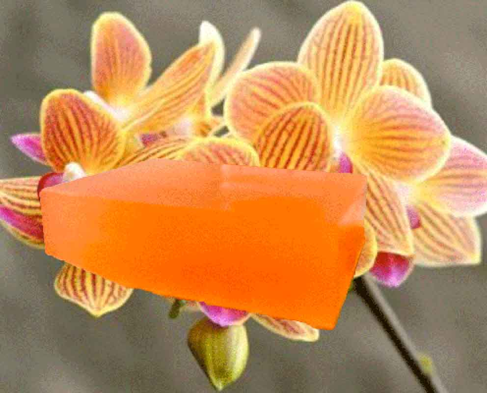

Welcome To Orange Orchid - Where Fragrance Blossoms !
Indulge your senses in the captivating world of Orange Orchid, a premier line of scented products designed to elevate your everyday experiences. Immerse yourself in the essence of nature's most vibrant and delightful fragrances, carefully curated to bring joy and sophistication to every moment.
Natural Citrus Delight
Step into a world where nature meets sophistication. Orange Orchid scented products are inspired by the lush orchards where the sun-kissed oranges grow, infusing your space with a touch of elegance. Our carefully designed packaging reflects the natural beauty of the orchard, making every product a statement piece for your home or office.
A Gift For Every Occasion
Searching for the perfect gift? Look no further. Orange Orchid offers a range of beautifully packaged gift sets that are ideal for birthdays, anniversaries, or any special occasion. Give the gift of delightful fragrances, including our rejuvenating bath beads and luxurious shave cream. Create lasting memories with our thoughtfully curated selections.
